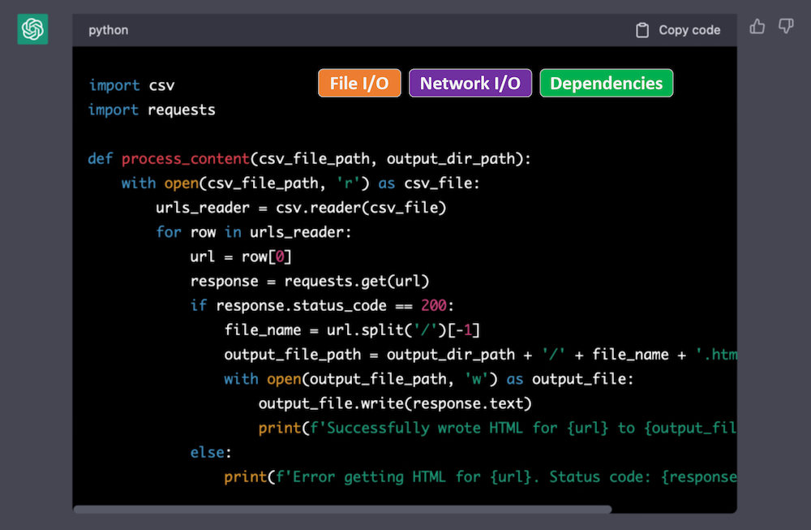

I work on AI + dev tools.
As the potential of AI grows, the need to understand the user experience grows far faster.
Recently I was tinkering with a prototype that uses GPT-3 to generate code, and I wanted to see how far I could push it.
It deleted files off my hard drive. Then it restarted my computer.
Of course, no one should let code written by AI be executed automatically. In fact, product teams everywhere are adding security and privacy guardrails to AI features. This specific scenario was probably my fault, though it still caught me off guard that it was possible.
But guardrails aren't all we need. There should be explicit communication about the implications of AI-generated code.
Much like installing an app on your phone, I want to see a list of permissions the generated code needs. Every code block that is generated by AI could show labels for:
If I see the code needs network access when I am just trying to calculate leap years, then a red flag goes up immediately. However, it takes quite a bit of time to understand the implications of using imports I've never used before.
It would be useful even in other settings too. Stack Overflow answers and GitHub gists could show these labels for any snippet.
How would these labels be produced? I've had very good luck asking ChatGPT to do it, but it could also be done without AI. Just a few years ago, Horton and Parnin published a technique, called DockerizeMe, for automatically inferring dependencies of arbitrary Python snippets. The same technique could be used to identify environment-modifying code, even if its buried many layers deep in a dependency.
We put a lot of burden on the user to verify this information manually, which they should be doing, but accidents happen. Cars have blind spot detectors and lane assist, and roads have markers and rumble strips.
The right safety features can have a huge impact.